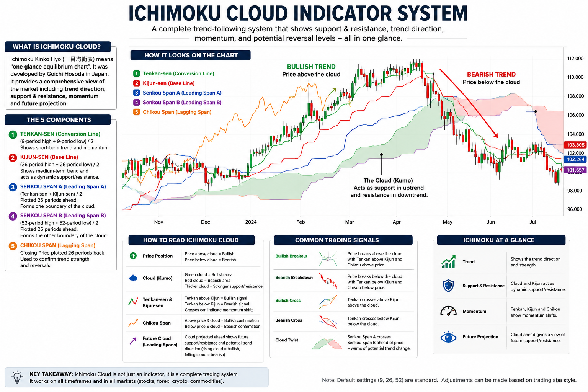

A complete professional guide to understanding, interpreting, and trading with the Ichimoku Kinko Hyo system. Learn every component, calculation, signal, cloud interpretation, trend analysis, support/resistance concepts, trading strategies, and risk management techniques.
The Ichimoku Kinko Hyo is a comprehensive technical analysis system developed by Japanese journalist Goichi Hosoda in the late 1930s. The phrase "Ichimoku Kinko Hyo" roughly translates to:
The goal of the indicator is to allow traders to determine trend, momentum, support, resistance, and potential future market direction from a single chart.
Unlike most indicators that provide only one type of information, Ichimoku combines multiple analytical dimensions into one complete trading framework.
Conversion Line
Short-term trend and momentum.
Base Line
Medium-term trend reference.
Leading Span A
First cloud boundary.
Leading Span B
Second cloud boundary.
Lagging Span
Confirmation component.
Measures short-term momentum and reacts faster than Kijun-sen.
Represents medium-term equilibrium and often acts as dynamic support and resistance.
Area between Senkou Span A and Senkou Span B = Kumo (Cloud)
The cloud is the heart of the Ichimoku system. It represents future support and resistance zones.
| Price Position | Market Condition |
|---|---|
| Above Cloud | Bullish Trend |
| Inside Cloud | Neutral / Consolidation |
| Below Cloud | Bearish Trend |
Occurs when Tenkan-sen crosses above Kijun-sen.
| Location | Signal Strength |
|---|---|
| Above Cloud | Strong Bullish |
| Inside Cloud | Medium Bullish |
| Below Cloud | Weak Bullish |
| Location | Signal Strength |
|---|---|
| Below Cloud | Strong Bearish |
| Inside Cloud | Medium Bearish |
| Above Cloud | Weak Bearish |
Chikou Span provides confirmation of trend strength.
| Chikou Position | Interpretation |
|---|---|
| Above Historical Price | Bullish Confirmation |
| Below Historical Price | Bearish Confirmation |
| Inside Historical Price | Uncertain Market |
| Timeframe | Purpose |
|---|---|
| Weekly | Major Trend |
| Daily | Trend Confirmation |
| 4 Hour | Trade Setup |
| 1 Hour | Precise Entry |
| Condition | Status |
|---|---|
| Price Above Cloud | ✓ Bullish |
| Tenkan Above Kijun | ✓ Bullish |
| Chikou Above Price | ✓ Confirmed |
| Future Cloud Bullish | ✓ Confirmed |
| Volume Confirmation | ✓ Preferred |
The Ichimoku Cloud is far more than a simple indicator. It is a complete market analysis framework capable of identifying trend, momentum, support, resistance, future projections, and trade opportunities simultaneously.
Professional traders often use Ichimoku because it provides exceptional market context with a single glance. When combined with proper risk management and disciplined execution, it becomes one of the most powerful trend-following systems available.
Mastering Ichimoku involves understanding the relationship between price, cloud position, Tenkan-sen, Kijun-sen, Senkou Spans, and Chikou Span—not merely looking for crossovers.
